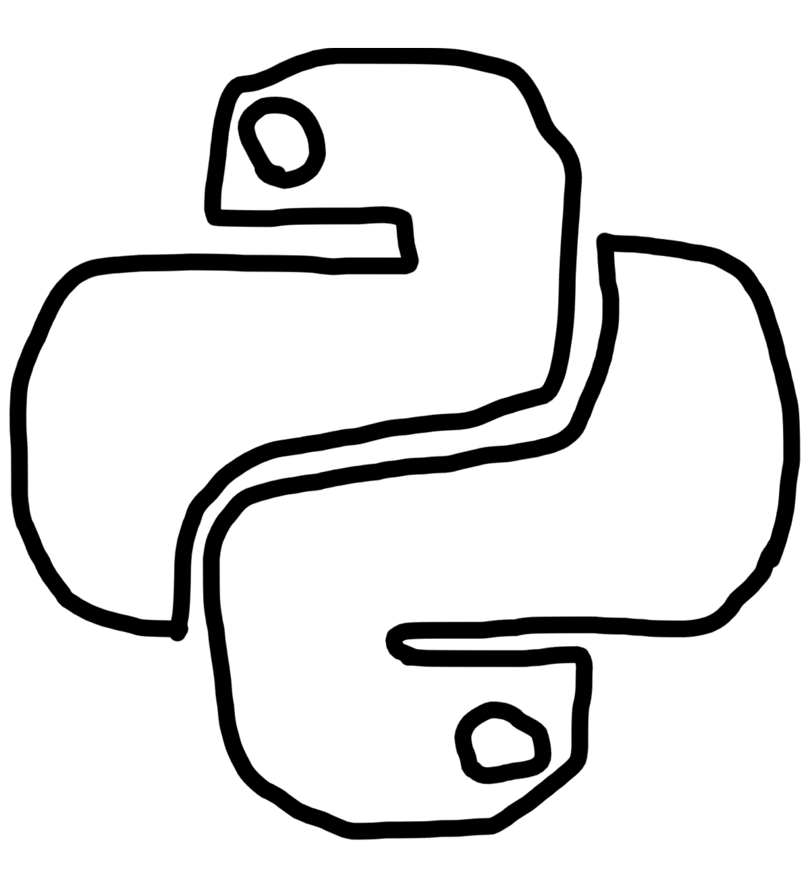

2.png)

Med python har jeg laget mange ting, men det som ofte er kjent som mitt beste prosjekt er python lukkeren 2000.
Python lukkeren 2000 kan finne knappen som lukker VSCode hvor jeg kjører mine python prosjekter. Den finner knappen, dermed beveger musa seg sakte mot knappen og trykker den.
Python lukkeren 2000 kan ikke bli lurt og prøver på nytt hver gang den bommer.
Html er en ting som kreves av nettsider. Denne portfolioen er laget med HTML og CSS men er ikke mitt første HTML prosjekt.
En av mine forrige HTML prosjekter involverte en mann som jeg fant fra google og en grønn bakgrunn.
Den kom også med linker til sosiale medier og en spennende spinnende pizza gif.
Gjennom historier kan du si mye. I dette prosjektet brukte jeg adobe XD til å lage en interaktiv historie.
I historien følger du Terje som skal til butikken fordi det er salg, men leseren må gjøre mange valg for å få en bra slutt på Terje sin historie.
Dette prosjektet involverte også bruk av det avanserte adobe photoshop programmet til å tegne illustasjoner.